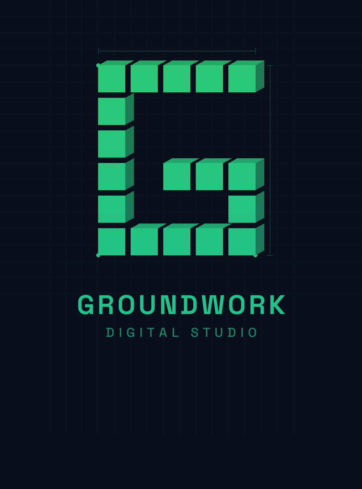
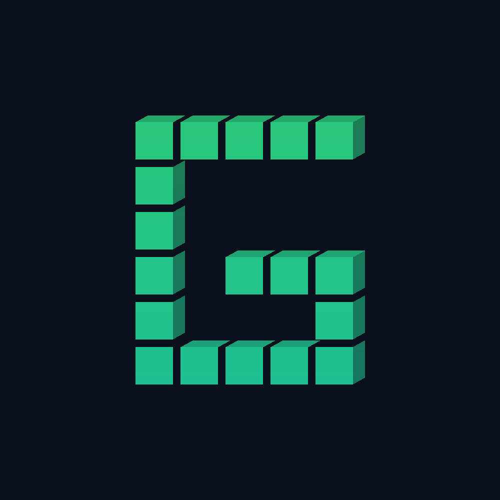
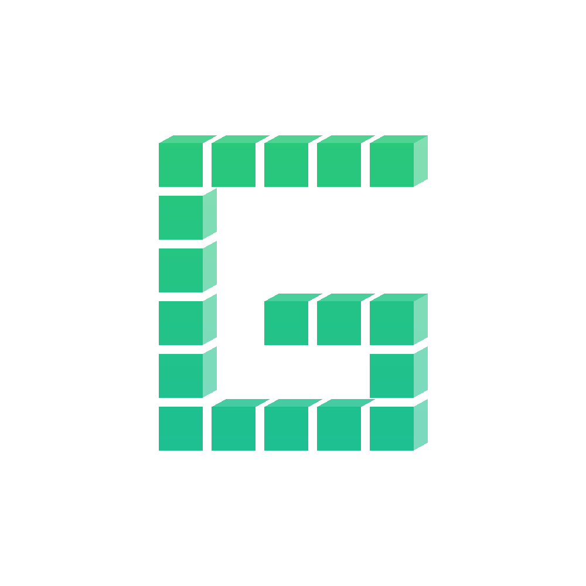
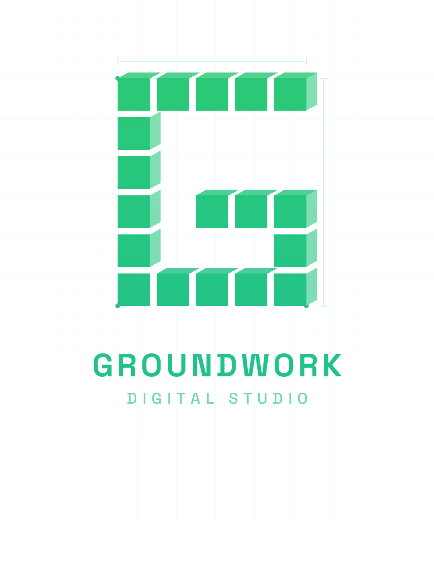
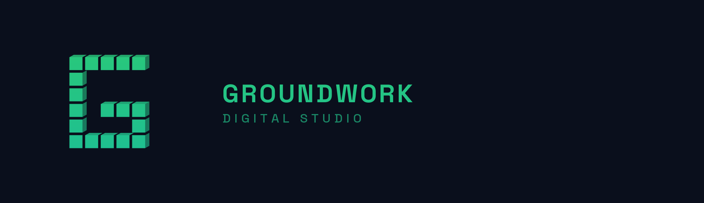

Version 1.0 — March 2026
01 / Logo
The Groundwork "G" mark is constructed from isometric building blocks, representing the dual meaning of laying foundations — both physical (trades/construction) and digital (web & brand strategy). Each block carries subtle 3D shading to convey depth and precision.

Dark background
Light backgroundLockups
Use the stacked lockup as the primary logo. The horizontal lockup is for constrained spaces like headers, email signatures, and social banners.

Primary — Light variant
Secondary — Horizontal lockup02 / Colour
The brand palette centres on a teal-green gradient that signals growth, reliability, and modernity. Navy provides grounding depth. White is used for clean, professional layouts.
Primary gradient: #2ECC71 → #1ABC9C (use at 135° or vertical)
03 / Typography
Space Grotesk serves as the heading and display typeface — geometric, modern, and technical. Inter handles body text with clarity and readability at all sizes.
04 / Clear Space & Sizing
Maintain clear space equal to the width of one building block on all sides of the logo mark. This ensures the logo is never crowded by surrounding elements.
Minimum clear space = 1 block width on each side • Minimum display size: 32px (icon) / 120px (lockup)
05 / Usage Rules
Consistent usage protects the brand. Follow these rules when applying the logo.
Teal gradient on navy, teal gradient on white, or monochrome white on dark backgrounds.
Never apply arbitrary colours, patterns, or photographic fills to the logo mark.
The blueprint grid adds context and visual interest at large sizes — ideal for headers and presentations.
Always maintain the original aspect ratio. Never skew, stretch, or tilt the logo.
Always use Space Grotesk for headings and Inter for body text in brand materials.
No drop shadows, outer glows, bevels, or 3D effects beyond the built-in isometric shading.
For websites and digital use, always prefer SVG files for crisp rendering at any scale.
The logo must sit on solid navy (#0A0F1C) or white (#FAFAFA) backgrounds only.
06 / Asset Reference
All logo assets are organised in the /brand directory.
brand/ ├── logo-mark/ │ ├── icon_pure_dark.png │ ├── icon_pure_white.png │ ├── icon_blueprint_dark.png │ └── icon_blueprint_white.png ├── lockups/ │ ├── lockup_stacked_blueprint_dark.png ← PRIMARY │ ├── lockup_stacked_blueprint_white.png │ ├── lockup_stacked_dark.png │ ├── lockup_stacked_white.png │ ├── lockup_horizontal_dark.png │ └── lockup_horizontal_white.png ├── svg/ │ ├── icon.svg (transparent) │ ├── icon_dark.svg │ ├── icon_blueprint.svg (transparent) │ ├── icon_blueprint_dark.svg │ ├── lockup_stacked_blueprint.svg │ ├── lockup_stacked_blueprint_dark.svg │ └── lockup_horizontal_dark.svg ├── brand-guidelines.html ← THIS FILE └── comparison.png